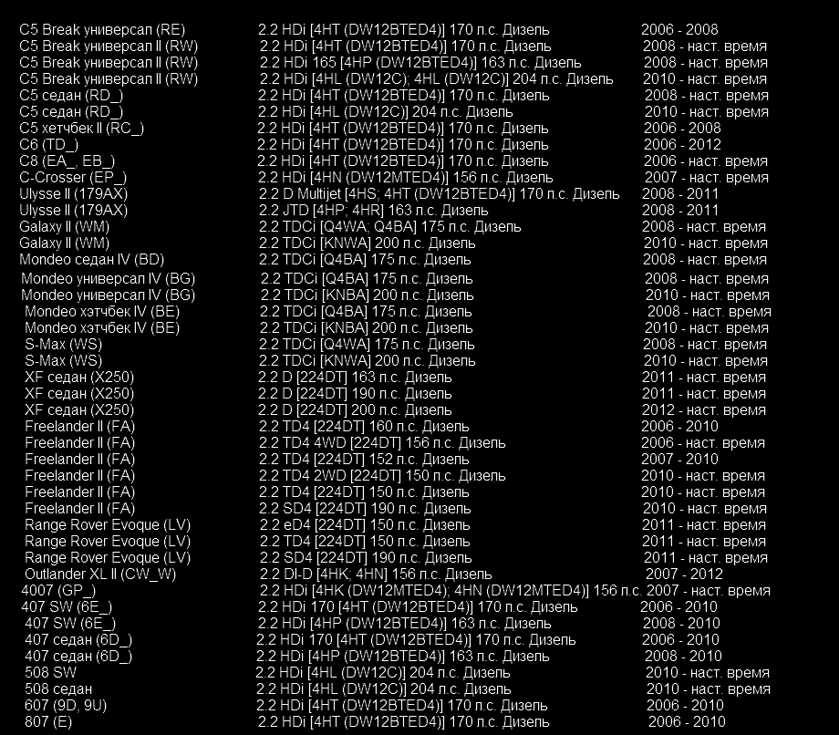

Практически в 100% случаев дроссельные заслонки выходят из строя из-за износа пластиковых элементов зубчатой передачи. Мы разработали решение и предлагаем его Вам. В процессе восстановления удаляются все пластиковые элементы зубчатой передачи и заменяются на металлические. Таким образом, узел дроссельной заслонки обретает вторую жизнь.
Группа автомобилей "VAG"
Ремкомплект подходит для марок: Volkswagen, Audi, Seat, Skoda, а так же для моторов: 2.0TDI, 3.0 TDI, 2.5TDI.(заслонок как с черной пластиковой, так и алюминиевой крышкой). Комплект: зубчатое колесо, и сектор. Группа автомобилей "Land Rover"
Комплект: зубчатое колесо, и сектор. Список моторов с подходящей дроссельной заслонкой: Видео по установке комплекта для групп автомобилей "Land Rover" Видео по установке комплекта для групп автомобилей "VAG"
Материал: сталь.
Контаты:
Skype: kosvan1
E-Mail: kosvan295@gmail.com
Моб.тел: + 375 (29) 222-58-37
Материал: сталь.
Контаты:
Skype: kosvan1
E-Mail: kosvan295@gmail.com
Моб.тел: + 375 (29) 222-58-37
